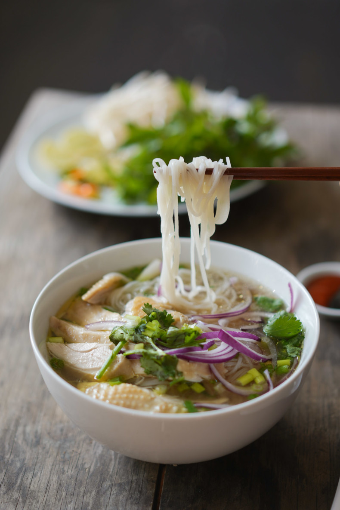

Chicken Pho

Background
Chicken Pho or Pho Ga is a rice noodle soup with a clear and bright broth from Vietnam. Similar to its beef counterpart,
but this recipe takes a fraction of the time and is much cheaper to produce.
Ingredients
- Canola or vegetable oil
- Yellow Onions
- Ginger
- Whole Chicken
- Chicken backs
- Cilantro
- Cinnamon
- Star Anise
- Corriander Seeds
- Black Peppercorns
- Cloves
- Bean Sprouts
- Scallions
- Lime
- Rice Noodles for Pho
- Water
- Salt
- Hoisin Sauce
- Sirracha
Steps
-
Heat oil in a pressure cooker over high heat until smoking. Add halved onions and ginger, cut sides down.
Cook without moving, reducing heat if smoking excessively, until onion and ginger are well charred, about 5 minutes.
-
Add chicken, cilantro, star anise, fennel seed, coriander, cinnamon, and cloves to the pot.
Add 2 quarts (1.9 liters) of water, the fish sauce, and the sugar to the pot.
Seal the pressure cooker and bring it to high pressure over high heat.
Cook on high pressure for 20 minutes, then shock under cold running water in the sink (or release pressure valve if using an electric pressure cooker).
-
Open pressure cooker. Transfer chicken legs to a plate.
Pour broth through a fine mesh strainer into a clean pot and discard solids.
Skim any scum off the surface of the broth using a ladle, but leave the small bubbles of fat intact.
Season broth to taste with more fish sauce and sugar if desired.
-
To serve, place prepared pho noodles in individual bowls.
Top with chicken legs, sliced onions, and scallions. Pour hot broth over chicken and noodles.
Serve immediately, allowing guests to add herbs, bean sprouts, chiles, lime, and sauces as they wish.
Back to Home